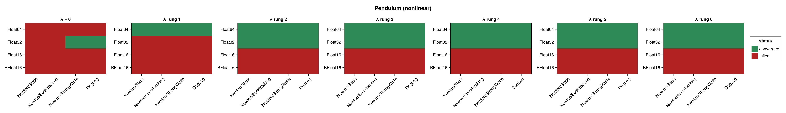
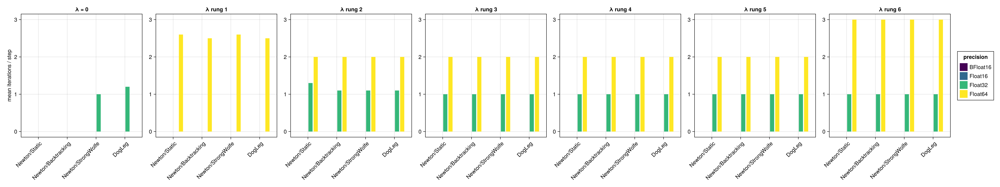
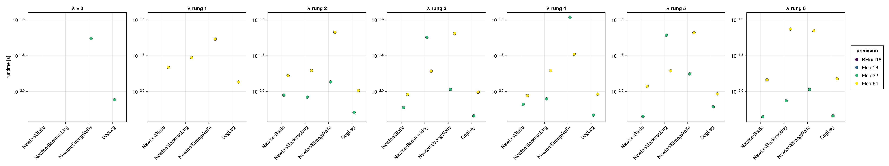
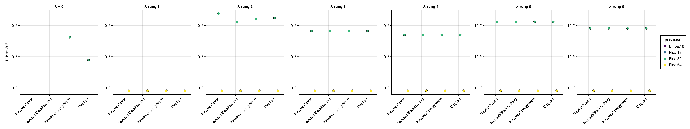

Pendulum (Nonlinear Integrator)
The mathematical pendulum benchmarked with the NonLinear_OneLayer_GML integrator (see Harmonic Oscillator (Nonlinear Integrator) for the network setup and the meaning of the regularization sweep). GeometricProblems.Pendulum provides no Lagrangian (lodeproblem) form, so its two-dimensional phase-space iodeproblem is used — the state is q = [angle, momentum], and the energy $H(\text{angle}, \text{momentum})$ is evaluated from both components. The pendulum is nonlinear, so it exercises the solves more than the harmonic oscillator. No closed-form solution is used; accuracy is assessed through the energy drift.
The figures panel by the regularization factor $\lambda$ — a rung of the $\sqrt{\varepsilon(T)}$ ladder, so one panel is a different shift at each precision; solver configurations are on the x-axis and precisions are distinguished by colour. Results are shown at $\Delta t = 0.1$ and repeated for $\Delta t = 1.0$ and $\Delta t = 10.0$ (ten steps each).
using SolverBenchmark
spec = pendulum_lode_spec(timespan = (0.0, 1.0), timestep = 0.1)
df = cached_sweep("nonlinear_pendulum_dt0.1") do
run_nonlinear_benchmark(spec; timing = :quick, max_iterations = 100,
verbose = false, quiet = true)
endConvergence
plot_convergence(df; panelcol = :regularization, title = "Pendulum (nonlinear)")
Nonlinear iterations
plot_iterations(df; panelcol = :regularization)
Run time
plot_runtime(df; panelcol = :regularization)
Energy drift
plot_energy_drift(df; panelcol = :regularization)
Discussion
- As for the harmonic oscillator, a nonzero regularization factor is required, and any rung will do. At
Float64, $\lambda = 0$ converges for no solver; every rung converges for all four, in $\approx 2.3$ iterations per step, conserving the energy to $8.05 \times 10^{-8}$ — to three significant figures the same drift at every rung, across a ladder spanning a factor of a thousand. - The pendulum's nonlinearity means the solve needs a few more iterations per step than the (linear) oscillator.
Float32converges from rung 2 up (23/28): all four solvers at rungs 2–6, but three of four at $\lambda = 0$ and none at rung 1. A rung that is worse than no regularization at all is the signature of the seed, not the solver — the OGA guess is rebuilt from the previous step's solution, so $\lambda$ perturbs the trajectory it is built from and can push a later step's Gram matrix into rank deficiency. See Harmonic Oscillator (Nonlinear Integrator) for that mechanism.- Both 16-bit formats fail at every rung (0/28 each, against 23/28 at
Float32and 24/28 atFloat64). The exception again comes from the OGA initial guess's Gram solve, not from the Newton Jacobian, soregularization_factorcannot reach it.
Results table
markdown_table(summary_table(df; panelcol = :regularization))| precision | solver_label | regularization | converged | iterations_mean | runtime_s | max_residual | at_tolerance | energy_drift |
|---|---|---|---|---|---|---|---|---|
| BFloat16 | Newton/Static | λ = 0 | ✗ | — | — | — | ✗ | — |
| BFloat16 | Newton/Static | λ rung 1 | ✗ | — | — | — | ✗ | — |
| BFloat16 | Newton/Static | λ rung 2 | ✗ | — | — | — | ✗ | — |
| BFloat16 | Newton/Static | λ rung 3 | ✗ | — | — | — | ✗ | — |
| BFloat16 | Newton/Static | λ rung 4 | ✗ | — | — | — | ✗ | — |
| BFloat16 | Newton/Static | λ rung 5 | ✗ | — | — | — | ✗ | — |
| BFloat16 | Newton/Static | λ rung 6 | ✗ | — | — | — | ✗ | — |
| BFloat16 | Newton/Backtracking | λ = 0 | ✗ | — | — | — | ✗ | — |
| BFloat16 | Newton/Backtracking | λ rung 1 | ✗ | — | — | — | ✗ | — |
| BFloat16 | Newton/Backtracking | λ rung 2 | ✗ | — | — | — | ✗ | — |
| BFloat16 | Newton/Backtracking | λ rung 3 | ✗ | — | — | — | ✗ | — |
| BFloat16 | Newton/Backtracking | λ rung 4 | ✗ | — | — | — | ✗ | — |
| BFloat16 | Newton/Backtracking | λ rung 5 | ✗ | — | — | — | ✗ | — |
| BFloat16 | Newton/Backtracking | λ rung 6 | ✗ | — | — | — | ✗ | — |
| BFloat16 | Newton/StrongWolfe | λ = 0 | ✗ | — | — | — | ✗ | — |
| BFloat16 | Newton/StrongWolfe | λ rung 1 | ✗ | — | — | — | ✗ | — |
| BFloat16 | Newton/StrongWolfe | λ rung 2 | ✗ | — | — | — | ✗ | — |
| BFloat16 | Newton/StrongWolfe | λ rung 3 | ✗ | — | — | — | ✗ | — |
| BFloat16 | Newton/StrongWolfe | λ rung 4 | ✗ | — | — | — | ✗ | — |
| BFloat16 | Newton/StrongWolfe | λ rung 5 | ✗ | — | — | — | ✗ | — |
| BFloat16 | Newton/StrongWolfe | λ rung 6 | ✗ | — | — | — | ✗ | — |
| BFloat16 | DogLeg | λ = 0 | ✗ | — | — | — | ✗ | — |
| BFloat16 | DogLeg | λ rung 1 | ✗ | — | — | — | ✗ | — |
| BFloat16 | DogLeg | λ rung 2 | ✗ | — | — | — | ✗ | — |
| BFloat16 | DogLeg | λ rung 3 | ✗ | — | — | — | ✗ | — |
| BFloat16 | DogLeg | λ rung 4 | ✗ | — | — | — | ✗ | — |
| BFloat16 | DogLeg | λ rung 5 | ✗ | — | — | — | ✗ | — |
| BFloat16 | DogLeg | λ rung 6 | ✗ | — | — | — | ✗ | — |
| Float16 | Newton/Static | λ = 0 | ✗ | — | — | — | ✗ | — |
| Float16 | Newton/Static | λ rung 1 | ✗ | — | — | — | ✗ | — |
| Float16 | Newton/Static | λ rung 2 | ✗ | — | — | — | ✗ | — |
| Float16 | Newton/Static | λ rung 3 | ✗ | — | — | — | ✗ | — |
| Float16 | Newton/Static | λ rung 4 | ✗ | — | — | — | ✗ | — |
| Float16 | Newton/Static | λ rung 5 | ✗ | — | — | — | ✗ | — |
| Float16 | Newton/Static | λ rung 6 | ✗ | — | — | — | ✗ | — |
| Float16 | Newton/Backtracking | λ = 0 | ✗ | — | — | — | ✗ | — |
| Float16 | Newton/Backtracking | λ rung 1 | ✗ | — | — | — | ✗ | — |
| Float16 | Newton/Backtracking | λ rung 2 | ✗ | — | — | — | ✗ | — |
| Float16 | Newton/Backtracking | λ rung 3 | ✗ | — | — | — | ✗ | — |
| Float16 | Newton/Backtracking | λ rung 4 | ✗ | — | — | — | ✗ | — |
| Float16 | Newton/Backtracking | λ rung 5 | ✗ | — | — | — | ✗ | — |
| Float16 | Newton/Backtracking | λ rung 6 | ✗ | — | — | — | ✗ | — |
| Float16 | Newton/StrongWolfe | λ = 0 | ✗ | — | — | — | ✗ | — |
| Float16 | Newton/StrongWolfe | λ rung 1 | ✗ | — | — | — | ✗ | — |
| Float16 | Newton/StrongWolfe | λ rung 2 | ✗ | — | — | — | ✗ | — |
| Float16 | Newton/StrongWolfe | λ rung 3 | ✗ | — | — | — | ✗ | — |
| Float16 | Newton/StrongWolfe | λ rung 4 | ✗ | — | — | — | ✗ | — |
| Float16 | Newton/StrongWolfe | λ rung 5 | ✗ | — | — | — | ✗ | — |
| Float16 | Newton/StrongWolfe | λ rung 6 | ✗ | — | — | — | ✗ | — |
| Float16 | DogLeg | λ = 0 | ✗ | — | — | — | ✗ | — |
| Float16 | DogLeg | λ rung 1 | ✗ | — | — | — | ✗ | — |
| Float16 | DogLeg | λ rung 2 | ✗ | — | — | — | ✗ | — |
| Float16 | DogLeg | λ rung 3 | ✗ | — | — | — | ✗ | — |
| Float16 | DogLeg | λ rung 4 | ✗ | — | — | — | ✗ | — |
| Float16 | DogLeg | λ rung 5 | ✗ | — | — | — | ✗ | — |
| Float16 | DogLeg | λ rung 6 | ✗ | — | — | — | ✗ | — |
| Float32 | Newton/Static | λ = 0 | ✗ | — | — | — | ✗ | — |
| Float32 | Newton/Static | λ rung 1 | ✗ | — | — | — | ✗ | — |
| Float32 | Newton/Static | λ rung 2 | ✓ | 1.3 | 0.00956 | 2.68e-05 | ✓ | 2.41e-05 |
| Float32 | Newton/Static | λ rung 3 | ✓ | 1 | 0.00813 | 1.91e-05 | ✓ | 6.65e-06 |
| Float32 | Newton/Static | λ rung 4 | ✓ | 1 | 0.00848 | 1.33e-05 | ✓ | 4.98e-06 |
| Float32 | Newton/Static | λ rung 5 | ✓ | 1 | 0.00728 | 2.84e-05 | ✓ | 1.31e-05 |
| Float32 | Newton/Static | λ rung 6 | ✓ | 1 | 0.00723 | 2.32e-05 | ✓ | 8.05e-06 |
| Float32 | Newton/Backtracking | λ = 0 | ✗ | 11.7 | 0.0711 | 0.000105 | ✗ | — |
| Float32 | Newton/Backtracking | λ rung 1 | ✗ | — | — | — | ✗ | — |
| Float32 | Newton/Backtracking | λ rung 2 | ✓ | 1.1 | 0.00931 | 1.79e-05 | ✓ | 1.27e-05 |
| Float32 | Newton/Backtracking | λ rung 3 | ✓ | 1 | 0.0201 | 1.91e-05 | ✓ | 6.65e-06 |
| Float32 | Newton/Backtracking | λ rung 4 | ✓ | 1 | 0.00911 | 1.33e-05 | ✓ | 4.98e-06 |
| Float32 | Newton/Backtracking | λ rung 5 | ✓ | 1 | 0.0206 | 2.84e-05 | ✓ | 1.31e-05 |
| Float32 | Newton/Backtracking | λ rung 6 | ✓ | 1 | 0.0089 | 2.32e-05 | ✓ | 8.05e-06 |
| Float32 | Newton/StrongWolfe | λ = 0 | ✓ | 1 | 0.0198 | 2.06e-05 | ✓ | 4.14e-06 |
| Float32 | Newton/StrongWolfe | λ rung 1 | ✗ | — | — | — | ✗ | — |
| Float32 | Newton/StrongWolfe | λ rung 2 | ✓ | 1.1 | 0.0113 | 1.36e-05 | ✓ | 1.57e-05 |
| Float32 | Newton/StrongWolfe | λ rung 3 | ✓ | 1 | 0.0103 | 1.91e-05 | ✓ | 6.65e-06 |
| Float32 | Newton/StrongWolfe | λ rung 4 | ✓ | 1 | 0.0259 | 1.33e-05 | ✓ | 4.98e-06 |
| Float32 | Newton/StrongWolfe | λ rung 5 | ✓ | 1 | 0.0125 | 2.84e-05 | ✓ | 1.31e-05 |
| Float32 | Newton/StrongWolfe | λ rung 6 | ✓ | 1 | 0.0103 | 2.32e-05 | ✓ | 8.05e-06 |
| Float32 | DogLeg | λ = 0 | ✓ | 1.2 | 0.009 | 2.55e-05 | ✓ | 7.75e-07 |
| Float32 | DogLeg | λ rung 1 | ✗ | — | — | — | ✗ | — |
| Float32 | DogLeg | λ rung 2 | ✓ | 1.1 | 0.00766 | 2.16e-05 | ✓ | 1.73e-05 |
| Float32 | DogLeg | λ rung 3 | ✓ | 1 | 0.00731 | 1.91e-05 | ✓ | 6.65e-06 |
| Float32 | DogLeg | λ rung 4 | ✓ | 1 | 0.00739 | 1.33e-05 | ✓ | 4.98e-06 |
| Float32 | DogLeg | λ rung 5 | ✓ | 1 | 0.00821 | 2.84e-05 | ✓ | 1.31e-05 |
| Float32 | DogLeg | λ rung 6 | ✓ | 1 | 0.00731 | 2.32e-05 | ✓ | 8.05e-06 |
| Float64 | Newton/Static | λ = 0 | ✗ | — | — | — | ✗ | — |
| Float64 | Newton/Static | λ rung 1 | ✓ | 2.6 | 0.0137 | 5.21e-14 | ✓ | 8.05e-08 |
| Float64 | Newton/Static | λ rung 2 | ✓ | 2 | 0.0123 | 3.89e-14 | ✓ | 8.05e-08 |
| Float64 | Newton/Static | λ rung 3 | ✓ | 2 | 0.00965 | 2.86e-14 | ✓ | 8.05e-08 |
| Float64 | Newton/Static | λ rung 4 | ✓ | 2 | 0.00949 | 4.85e-14 | ✓ | 8.05e-08 |
| Float64 | Newton/Static | λ rung 5 | ✓ | 2 | 0.0107 | 4.56e-14 | ✓ | 8.05e-08 |
| Float64 | Newton/Static | λ rung 6 | ✓ | 3 | 0.0116 | 1.99e-14 | ✓ | 8.05e-08 |
| Float64 | Newton/Backtracking | λ = 0 | ✗ | 92.1 | 0.743 | 3.34e-10 | ✗ | — |
| Float64 | Newton/Backtracking | λ rung 1 | ✓ | 2.5 | 0.0155 | 4.19e-14 | ✓ | 8.05e-08 |
| Float64 | Newton/Backtracking | λ rung 2 | ✓ | 2 | 0.0131 | 3.89e-14 | ✓ | 8.05e-08 |
| Float64 | Newton/Backtracking | λ rung 3 | ✓ | 2 | 0.013 | 2.86e-14 | ✓ | 8.05e-08 |
| Float64 | Newton/Backtracking | λ rung 4 | ✓ | 2 | 0.0131 | 4.85e-14 | ✓ | 8.05e-08 |
| Float64 | Newton/Backtracking | λ rung 5 | ✓ | 2 | 0.0131 | 4.56e-14 | ✓ | 8.05e-08 |
| Float64 | Newton/Backtracking | λ rung 6 | ✓ | 3 | 0.0223 | 1.99e-14 | ✓ | 8.05e-08 |
| Float64 | Newton/StrongWolfe | λ = 0 | ✗ | — | — | — | ✗ | — |
| Float64 | Newton/StrongWolfe | λ rung 1 | ✓ | 2.6 | 0.0196 | 4.19e-14 | ✓ | 8.05e-08 |
| Float64 | Newton/StrongWolfe | λ rung 2 | ✓ | 2 | 0.0215 | 3.89e-14 | ✓ | 8.05e-08 |
| Float64 | Newton/StrongWolfe | λ rung 3 | ✓ | 2 | 0.0211 | 2.86e-14 | ✓ | 8.05e-08 |
| Float64 | Newton/StrongWolfe | λ rung 4 | ✓ | 2 | 0.0162 | 4.85e-14 | ✓ | 8.05e-08 |
| Float64 | Newton/StrongWolfe | λ rung 5 | ✓ | 2 | 0.0213 | 4.56e-14 | ✓ | 8.05e-08 |
| Float64 | Newton/StrongWolfe | λ rung 6 | ✓ | 3 | 0.0219 | 1.99e-14 | ✓ | 8.05e-08 |
| Float64 | DogLeg | λ = 0 | ✗ | 22.2 | 0.09 | 1.68e-10 | ✗ | — |
| Float64 | DogLeg | λ rung 1 | ✓ | 2.5 | 0.0113 | 4.19e-14 | ✓ | 8.05e-08 |
| Float64 | DogLeg | λ rung 2 | ✓ | 2 | 0.0101 | 3.89e-14 | ✓ | 8.05e-08 |
| Float64 | DogLeg | λ rung 3 | ✓ | 2 | 0.00993 | 2.86e-14 | ✓ | 8.05e-08 |
| Float64 | DogLeg | λ rung 4 | ✓ | 2 | 0.00968 | 4.85e-14 | ✓ | 8.05e-08 |
| Float64 | DogLeg | λ rung 5 | ✓ | 2 | 0.0097 | 4.56e-14 | ✓ | 8.05e-08 |
| Float64 | DogLeg | λ rung 6 | ✓ | 3 | 0.0118 | 1.99e-14 | ✓ | 8.05e-08 |
Coarse time step (Δt = 1.0)
spec1 = pendulum_lode_spec(timespan = (0.0, 10.0), timestep = 1.0)
df1 = cached_sweep("nonlinear_pendulum_dt1.0") do
run_nonlinear_benchmark(spec1; timing = :quick, max_iterations = 100,
verbose = false, quiet = true)
endplot_convergence(df1; panelcol = :regularization, title = "Pendulum (nonlinear, Δt = 1.0)")
plot_energy_drift(df1; panelcol = :regularization)
markdown_table(summary_table(df1; panelcol = :regularization))| precision | solver_label | regularization | converged | iterations_mean | runtime_s | max_residual |
|---|---|---|---|---|---|---|
| BFloat16 | Newton/Static | λ = 0 | ✗ | — | — | — |
| BFloat16 | Newton/Static | λ rung 1 | ✗ | — | — | — |
| BFloat16 | Newton/Static | λ rung 2 | ✗ | — | — | — |
| BFloat16 | Newton/Static | λ rung 3 | ✗ | — | — | — |
| BFloat16 | Newton/Static | λ rung 4 | ✗ | — | — | — |
| BFloat16 | Newton/Static | λ rung 5 | ✗ | — | — | — |
| BFloat16 | Newton/Static | λ rung 6 | ✗ | — | — | — |
| BFloat16 | Newton/Backtracking | λ = 0 | ✗ | — | — | — |
| BFloat16 | Newton/Backtracking | λ rung 1 | ✗ | — | — | — |
| BFloat16 | Newton/Backtracking | λ rung 2 | ✗ | — | — | — |
| BFloat16 | Newton/Backtracking | λ rung 3 | ✗ | — | — | — |
| BFloat16 | Newton/Backtracking | λ rung 4 | ✗ | — | — | — |
| BFloat16 | Newton/Backtracking | λ rung 5 | ✗ | — | — | — |
| BFloat16 | Newton/Backtracking | λ rung 6 | ✗ | — | — | — |
| BFloat16 | Newton/StrongWolfe | λ = 0 | ✗ | — | — | — |
| BFloat16 | Newton/StrongWolfe | λ rung 1 | ✗ | — | — | — |
| BFloat16 | Newton/StrongWolfe | λ rung 2 | ✗ | — | — | — |
| BFloat16 | Newton/StrongWolfe | λ rung 3 | ✗ | — | — | — |
| BFloat16 | Newton/StrongWolfe | λ rung 4 | ✗ | — | — | — |
| BFloat16 | Newton/StrongWolfe | λ rung 5 | ✗ | — | — | — |
| BFloat16 | Newton/StrongWolfe | λ rung 6 | ✗ | — | — | — |
| BFloat16 | DogLeg | λ = 0 | ✗ | — | — | — |
| BFloat16 | DogLeg | λ rung 1 | ✗ | — | — | — |
| BFloat16 | DogLeg | λ rung 2 | ✗ | — | — | — |
| BFloat16 | DogLeg | λ rung 3 | ✗ | — | — | — |
| BFloat16 | DogLeg | λ rung 4 | ✗ | — | — | — |
| BFloat16 | DogLeg | λ rung 5 | ✗ | — | — | — |
| BFloat16 | DogLeg | λ rung 6 | ✗ | — | — | — |
| Float16 | Newton/Static | λ = 0 | ✗ | — | — | — |
| Float16 | Newton/Static | λ rung 1 | ✗ | — | — | — |
| Float16 | Newton/Static | λ rung 2 | ✗ | — | — | — |
| Float16 | Newton/Static | λ rung 3 | ✗ | — | — | — |
| Float16 | Newton/Static | λ rung 4 | ✗ | — | — | — |
| Float16 | Newton/Static | λ rung 5 | ✗ | — | — | — |
| Float16 | Newton/Static | λ rung 6 | ✗ | — | — | — |
| Float16 | Newton/Backtracking | λ = 0 | ✗ | — | — | — |
| Float16 | Newton/Backtracking | λ rung 1 | ✗ | — | — | — |
| Float16 | Newton/Backtracking | λ rung 2 | ✗ | — | — | — |
| Float16 | Newton/Backtracking | λ rung 3 | ✗ | — | — | — |
| Float16 | Newton/Backtracking | λ rung 4 | ✗ | — | — | — |
| Float16 | Newton/Backtracking | λ rung 5 | ✗ | — | — | — |
| Float16 | Newton/Backtracking | λ rung 6 | ✗ | — | — | — |
| Float16 | Newton/StrongWolfe | λ = 0 | ✗ | — | — | — |
| Float16 | Newton/StrongWolfe | λ rung 1 | ✗ | — | — | — |
| Float16 | Newton/StrongWolfe | λ rung 2 | ✗ | — | — | — |
| Float16 | Newton/StrongWolfe | λ rung 3 | ✗ | — | — | — |
| Float16 | Newton/StrongWolfe | λ rung 4 | ✗ | — | — | — |
| Float16 | Newton/StrongWolfe | λ rung 5 | ✗ | — | — | — |
| Float16 | Newton/StrongWolfe | λ rung 6 | ✗ | — | — | — |
| Float16 | DogLeg | λ = 0 | ✗ | — | — | — |
| Float16 | DogLeg | λ rung 1 | ✗ | — | — | — |
| Float16 | DogLeg | λ rung 2 | ✗ | — | — | — |
| Float16 | DogLeg | λ rung 3 | ✗ | — | — | — |
| Float16 | DogLeg | λ rung 4 | ✗ | — | — | — |
| Float16 | DogLeg | λ rung 5 | ✗ | — | — | — |
| Float16 | DogLeg | λ rung 6 | ✗ | — | — | — |
| Float32 | Newton/Static | λ = 0 | ✗ | — | — | — |
| Float32 | Newton/Static | λ rung 1 | ✗ | — | — | — |
| Float32 | Newton/Static | λ rung 2 | ✗ | — | — | — |
| Float32 | Newton/Static | λ rung 3 | ✗ | — | — | — |
| Float32 | Newton/Static | λ rung 4 | ✗ | — | — | — |
| Float32 | Newton/Static | λ rung 5 | ✗ | — | — | — |
| Float32 | Newton/Static | λ rung 6 | ✗ | — | — | — |
| Float32 | Newton/Backtracking | λ = 0 | ✗ | — | — | — |
| Float32 | Newton/Backtracking | λ rung 1 | ✗ | — | — | — |
| Float32 | Newton/Backtracking | λ rung 2 | ✗ | — | — | — |
| Float32 | Newton/Backtracking | λ rung 3 | ✗ | — | — | — |
| Float32 | Newton/Backtracking | λ rung 4 | ✗ | — | — | — |
| Float32 | Newton/Backtracking | λ rung 5 | ✗ | — | — | — |
| Float32 | Newton/Backtracking | λ rung 6 | ✗ | — | — | — |
| Float32 | Newton/StrongWolfe | λ = 0 | ✗ | — | — | — |
| Float32 | Newton/StrongWolfe | λ rung 1 | ✗ | — | — | — |
| Float32 | Newton/StrongWolfe | λ rung 2 | ✗ | — | — | — |
| Float32 | Newton/StrongWolfe | λ rung 3 | ✗ | — | — | — |
| Float32 | Newton/StrongWolfe | λ rung 4 | ✗ | — | — | — |
| Float32 | Newton/StrongWolfe | λ rung 5 | ✗ | — | — | — |
| Float32 | Newton/StrongWolfe | λ rung 6 | ✗ | — | — | — |
| Float32 | DogLeg | λ = 0 | ✗ | — | — | — |
| Float32 | DogLeg | λ rung 1 | ✗ | — | — | — |
| Float32 | DogLeg | λ rung 2 | ✗ | — | — | — |
| Float32 | DogLeg | λ rung 3 | ✗ | — | — | — |
| Float32 | DogLeg | λ rung 4 | ✗ | — | — | — |
| Float32 | DogLeg | λ rung 5 | ✗ | — | — | — |
| Float32 | DogLeg | λ rung 6 | ✗ | — | — | — |
| Float64 | Newton/Static | λ = 0 | ✗ | — | — | — |
| Float64 | Newton/Static | λ rung 1 | ✗ | — | — | — |
| Float64 | Newton/Static | λ rung 2 | ✗ | — | — | — |
| Float64 | Newton/Static | λ rung 3 | ✗ | — | — | — |
| Float64 | Newton/Static | λ rung 4 | ✗ | — | — | — |
| Float64 | Newton/Static | λ rung 5 | ✗ | — | — | — |
| Float64 | Newton/Static | λ rung 6 | ✗ | — | — | — |
| Float64 | Newton/Backtracking | λ = 0 | ✗ | 89.6 | 0.728 | 0.241 |
| Float64 | Newton/Backtracking | λ rung 1 | ✗ | 86.5 | 0.694 | 0.14 |
| Float64 | Newton/Backtracking | λ rung 2 | ✗ | 73.4 | 0.54 | 0.833 |
| Float64 | Newton/Backtracking | λ rung 3 | ✗ | 75.4 | 0.536 | 0.373 |
| Float64 | Newton/Backtracking | λ rung 4 | ✗ | 66.2 | 0.516 | 0.177 |
| Float64 | Newton/Backtracking | λ rung 5 | ✗ | 87.5 | 0.73 | 0.138 |
| Float64 | Newton/Backtracking | λ rung 6 | ✗ | 89.2 | 0.74 | 1.42 |
| Float64 | Newton/StrongWolfe | λ = 0 | ✗ | 88.7 | 1.21 | 0.135 |
| Float64 | Newton/StrongWolfe | λ rung 1 | ✗ | — | — | — |
| Float64 | Newton/StrongWolfe | λ rung 2 | ✗ | — | — | — |
| Float64 | Newton/StrongWolfe | λ rung 3 | ✗ | 70.6 | 0.758 | 0.793 |
| Float64 | Newton/StrongWolfe | λ rung 4 | ✗ | 5.2 | 0.0848 | Inf |
| Float64 | Newton/StrongWolfe | λ rung 5 | ✗ | 66 | 0.716 | 0.0786 |
| Float64 | Newton/StrongWolfe | λ rung 6 | ✗ | 64.1 | 0.776 | 1.21e+47 |
| Float64 | DogLeg | λ = 0 | ✗ | 75.9 | 0.277 | 0.0575 |
| Float64 | DogLeg | λ rung 1 | ✗ | 50.4 | 0.167 | 0.0226 |
| Float64 | DogLeg | λ rung 2 | ✗ | 45.2 | 0.179 | 0.00685 |
| Float64 | DogLeg | λ rung 3 | ✗ | 39.2 | 0.122 | 0.0214 |
| Float64 | DogLeg | λ rung 4 | ✗ | 42.4 | 0.16 | 0.0203 |
| Float64 | DogLeg | λ rung 5 | ✗ | 47.2 | 0.153 | 0.0821 |
| Float64 | DogLeg | λ rung 6 | ✗ | 60.3 | 0.239 | 0.0424 |
Large time step (Δt = 10.0)
spec10 = pendulum_lode_spec(timespan = (0.0, 100.0), timestep = 10.0)
df10 = cached_sweep("nonlinear_pendulum_dt10.0") do
run_nonlinear_benchmark(spec10; timing = :quick, max_iterations = 100,
verbose = false, quiet = true)
endplot_convergence(df10; panelcol = :regularization, title = "Pendulum (nonlinear, Δt = 10.0)")
markdown_table(summary_table(df10; panelcol = :regularization))| precision | solver_label | regularization | converged | iterations_mean | runtime_s | max_residual |
|---|---|---|---|---|---|---|
| BFloat16 | Newton/Static | λ = 0 | ✗ | — | — | — |
| BFloat16 | Newton/Static | λ rung 1 | ✗ | — | — | — |
| BFloat16 | Newton/Static | λ rung 2 | ✗ | — | — | — |
| BFloat16 | Newton/Static | λ rung 3 | ✗ | — | — | — |
| BFloat16 | Newton/Static | λ rung 4 | ✗ | — | — | — |
| BFloat16 | Newton/Static | λ rung 5 | ✗ | — | — | — |
| BFloat16 | Newton/Static | λ rung 6 | ✗ | — | — | — |
| BFloat16 | Newton/Backtracking | λ = 0 | ✗ | — | — | — |
| BFloat16 | Newton/Backtracking | λ rung 1 | ✗ | — | — | — |
| BFloat16 | Newton/Backtracking | λ rung 2 | ✗ | — | — | — |
| BFloat16 | Newton/Backtracking | λ rung 3 | ✗ | — | — | — |
| BFloat16 | Newton/Backtracking | λ rung 4 | ✗ | — | — | — |
| BFloat16 | Newton/Backtracking | λ rung 5 | ✗ | — | — | — |
| BFloat16 | Newton/Backtracking | λ rung 6 | ✗ | — | — | — |
| BFloat16 | Newton/StrongWolfe | λ = 0 | ✗ | — | — | — |
| BFloat16 | Newton/StrongWolfe | λ rung 1 | ✗ | — | — | — |
| BFloat16 | Newton/StrongWolfe | λ rung 2 | ✗ | — | — | — |
| BFloat16 | Newton/StrongWolfe | λ rung 3 | ✗ | — | — | — |
| BFloat16 | Newton/StrongWolfe | λ rung 4 | ✗ | — | — | — |
| BFloat16 | Newton/StrongWolfe | λ rung 5 | ✗ | — | — | — |
| BFloat16 | Newton/StrongWolfe | λ rung 6 | ✗ | — | — | — |
| BFloat16 | DogLeg | λ = 0 | ✗ | — | — | — |
| BFloat16 | DogLeg | λ rung 1 | ✗ | — | — | — |
| BFloat16 | DogLeg | λ rung 2 | ✗ | — | — | — |
| BFloat16 | DogLeg | λ rung 3 | ✗ | — | — | — |
| BFloat16 | DogLeg | λ rung 4 | ✗ | — | — | — |
| BFloat16 | DogLeg | λ rung 5 | ✗ | — | — | — |
| BFloat16 | DogLeg | λ rung 6 | ✗ | — | — | — |
| Float16 | Newton/Static | λ = 0 | ✗ | — | — | — |
| Float16 | Newton/Static | λ rung 1 | ✗ | — | — | — |
| Float16 | Newton/Static | λ rung 2 | ✗ | — | — | — |
| Float16 | Newton/Static | λ rung 3 | ✗ | — | — | — |
| Float16 | Newton/Static | λ rung 4 | ✗ | — | — | — |
| Float16 | Newton/Static | λ rung 5 | ✗ | — | — | — |
| Float16 | Newton/Static | λ rung 6 | ✗ | — | — | — |
| Float16 | Newton/Backtracking | λ = 0 | ✗ | — | — | — |
| Float16 | Newton/Backtracking | λ rung 1 | ✗ | — | — | — |
| Float16 | Newton/Backtracking | λ rung 2 | ✗ | — | — | — |
| Float16 | Newton/Backtracking | λ rung 3 | ✗ | — | — | — |
| Float16 | Newton/Backtracking | λ rung 4 | ✗ | — | — | — |
| Float16 | Newton/Backtracking | λ rung 5 | ✗ | — | — | — |
| Float16 | Newton/Backtracking | λ rung 6 | ✗ | — | — | — |
| Float16 | Newton/StrongWolfe | λ = 0 | ✗ | — | — | — |
| Float16 | Newton/StrongWolfe | λ rung 1 | ✗ | — | — | — |
| Float16 | Newton/StrongWolfe | λ rung 2 | ✗ | — | — | — |
| Float16 | Newton/StrongWolfe | λ rung 3 | ✗ | — | — | — |
| Float16 | Newton/StrongWolfe | λ rung 4 | ✗ | — | — | — |
| Float16 | Newton/StrongWolfe | λ rung 5 | ✗ | — | — | — |
| Float16 | Newton/StrongWolfe | λ rung 6 | ✗ | — | — | — |
| Float16 | DogLeg | λ = 0 | ✗ | — | — | — |
| Float16 | DogLeg | λ rung 1 | ✗ | — | — | — |
| Float16 | DogLeg | λ rung 2 | ✗ | — | — | — |
| Float16 | DogLeg | λ rung 3 | ✗ | — | — | — |
| Float16 | DogLeg | λ rung 4 | ✗ | — | — | — |
| Float16 | DogLeg | λ rung 5 | ✗ | — | — | — |
| Float16 | DogLeg | λ rung 6 | ✗ | — | — | — |
| Float32 | Newton/Static | λ = 0 | ✗ | — | — | — |
| Float32 | Newton/Static | λ rung 1 | ✗ | — | — | — |
| Float32 | Newton/Static | λ rung 2 | ✗ | — | — | — |
| Float32 | Newton/Static | λ rung 3 | ✗ | — | — | — |
| Float32 | Newton/Static | λ rung 4 | ✗ | — | — | — |
| Float32 | Newton/Static | λ rung 5 | ✗ | — | — | — |
| Float32 | Newton/Static | λ rung 6 | ✗ | — | — | — |
| Float32 | Newton/Backtracking | λ = 0 | ✗ | — | — | — |
| Float32 | Newton/Backtracking | λ rung 1 | ✗ | — | — | — |
| Float32 | Newton/Backtracking | λ rung 2 | ✗ | — | — | — |
| Float32 | Newton/Backtracking | λ rung 3 | ✗ | 99.1 | 0.65 | 8.7e+12 |
| Float32 | Newton/Backtracking | λ rung 4 | ✗ | 83.1 | 0.204 | Inf |
| Float32 | Newton/Backtracking | λ rung 5 | ✗ | — | — | — |
| Float32 | Newton/Backtracking | λ rung 6 | ✗ | 98.3 | 0.608 | 1.01e+15 |
| Float32 | Newton/StrongWolfe | λ = 0 | ✗ | — | — | — |
| Float32 | Newton/StrongWolfe | λ rung 1 | ✗ | 6.5 | 0.117 | Inf |
| Float32 | Newton/StrongWolfe | λ rung 2 | ✗ | 7.7 | 0.224 | Inf |
| Float32 | Newton/StrongWolfe | λ rung 3 | ✗ | — | — | — |
| Float32 | Newton/StrongWolfe | λ rung 4 | ✗ | 17.2 | 0.183 | Inf |
| Float32 | Newton/StrongWolfe | λ rung 5 | ✗ | — | — | — |
| Float32 | Newton/StrongWolfe | λ rung 6 | ✗ | — | — | — |
| Float32 | DogLeg | λ = 0 | ✗ | 100 | 0.27 | 83.9 |
| Float32 | DogLeg | λ rung 1 | ✗ | 94 | 0.237 | 400 |
| Float32 | DogLeg | λ rung 2 | ✗ | 100 | 0.241 | 490 |
| Float32 | DogLeg | λ rung 3 | ✗ | 100 | 0.246 | 161 |
| Float32 | DogLeg | λ rung 4 | ✗ | 97.3 | 0.0967 | 284 |
| Float32 | DogLeg | λ rung 5 | ✗ | 100 | 0.275 | 147 |
| Float32 | DogLeg | λ rung 6 | ✗ | 70.7 | 0.254 | 2.88e+04 |
| Float64 | Newton/Static | λ = 0 | ✗ | — | — | — |
| Float64 | Newton/Static | λ rung 1 | ✗ | — | — | — |
| Float64 | Newton/Static | λ rung 2 | ✗ | — | — | — |
| Float64 | Newton/Static | λ rung 3 | ✗ | — | — | — |
| Float64 | Newton/Static | λ rung 4 | ✗ | — | — | — |
| Float64 | Newton/Static | λ rung 5 | ✗ | — | — | — |
| Float64 | Newton/Static | λ rung 6 | ✗ | — | — | — |
| Float64 | Newton/Backtracking | λ = 0 | ✗ | — | — | — |
| Float64 | Newton/Backtracking | λ rung 1 | ✗ | 100 | 0.785 | 3.21e+29 |
| Float64 | Newton/Backtracking | λ rung 2 | ✗ | 100 | 0.935 | 1.8e+03 |
| Float64 | Newton/Backtracking | λ rung 3 | ✗ | 100 | 0.941 | 1.76e+03 |
| Float64 | Newton/Backtracking | λ rung 4 | ✗ | 92.1 | 1.17 | 3.17e+13 |
| Float64 | Newton/Backtracking | λ rung 5 | ✗ | 92 | 1.07 | 1.65e+04 |
| Float64 | Newton/Backtracking | λ rung 6 | ✗ | 100 | 0.8 | 1.1e+03 |
| Float64 | Newton/StrongWolfe | λ = 0 | ✗ | — | — | — |
| Float64 | Newton/StrongWolfe | λ rung 1 | ✗ | 40.5 | 0.304 | 2.14e+106 |
| Float64 | Newton/StrongWolfe | λ rung 2 | ✗ | — | — | — |
| Float64 | Newton/StrongWolfe | λ rung 3 | ✗ | — | — | — |
| Float64 | Newton/StrongWolfe | λ rung 4 | ✗ | — | — | — |
| Float64 | Newton/StrongWolfe | λ rung 5 | ✗ | — | — | — |
| Float64 | Newton/StrongWolfe | λ rung 6 | ✗ | — | — | — |
| Float64 | DogLeg | λ = 0 | ✗ | 100 | 0.327 | 735 |
| Float64 | DogLeg | λ rung 1 | ✗ | 100 | 0.295 | 433 |
| Float64 | DogLeg | λ rung 2 | ✗ | 100 | 0.309 | 160 |
| Float64 | DogLeg | λ rung 3 | ✗ | 100 | 0.302 | 359 |
| Float64 | DogLeg | λ rung 4 | ✗ | 100 | 0.3 | 94 |
| Float64 | DogLeg | λ rung 5 | ✗ | 100 | 0.335 | 649 |
| Float64 | DogLeg | λ rung 6 | ✗ | 100 | 0.373 | 501 |